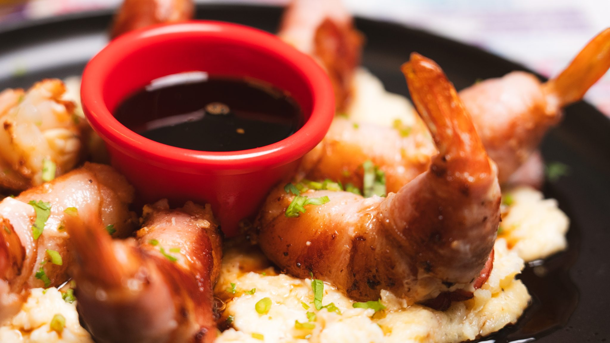
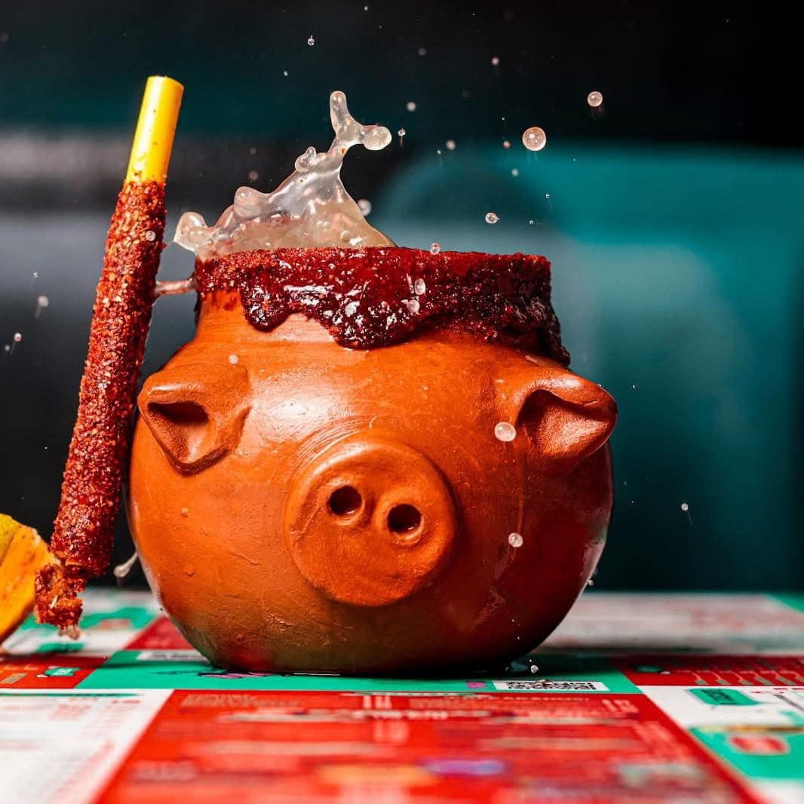
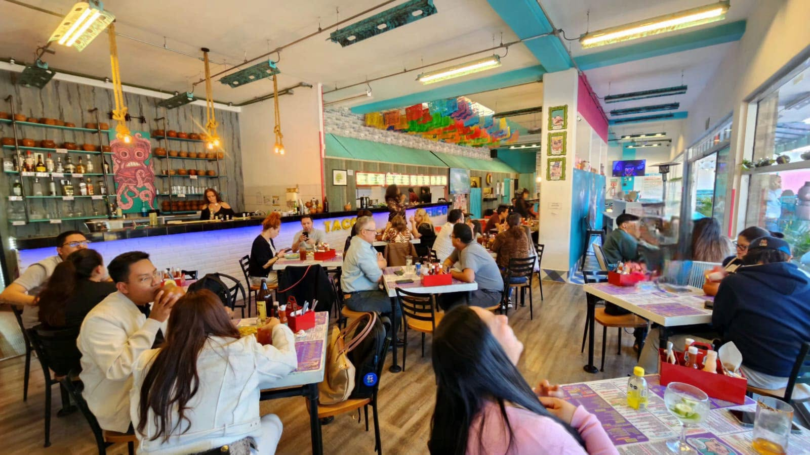
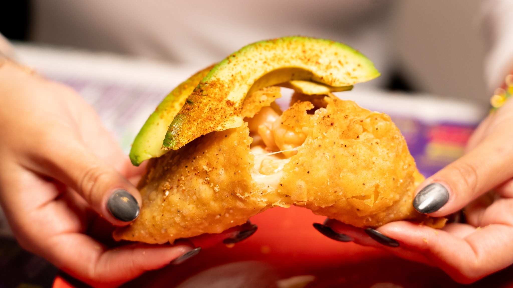
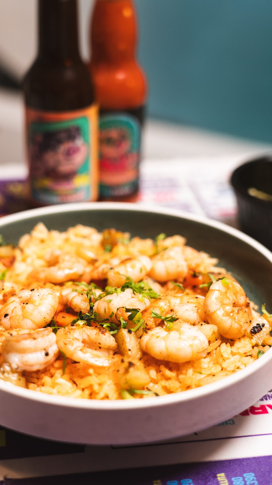
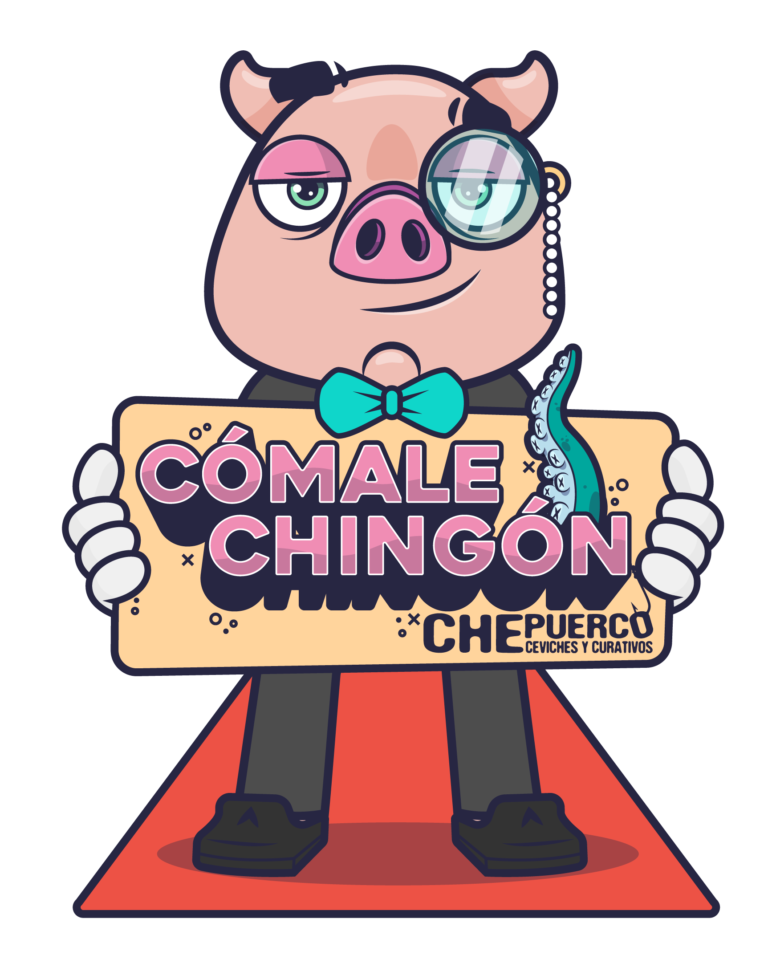

EN CHE PUERCO
¡Este mes se antoja!
Promociones y novedades que no te puedes perder.



CONOCE CHE PUERCO
Aquí el antojo no tiene reglas.
En Che Puerco creemos que los buenos momentos siempre vienen acompañados de algo rico para comer.
Somos el punto de encuentro entre el sabor del mar, los buenos antojos y ese toque de personalidad que nos hace únicos.
Nos gusta comer bien, pasarla mejor y hacer que cada visita se convierta en una experiencia para repetir.
Descubre nuestro menú
ALGO BUENO TE ESPERA
Nuestro menú

Platillo
Descripción del platillo.
Platillo
Descripción del platillo.

Platillo
Descripción del platillo.

Platillo
Descripción del platillo.

Cuba libre
Ron, refresco de cola y limón.
Whisky en las rocas
Pregunta por la carta.
Michelada
limón y sal
VEN A VISITARNOS
Encuentra tu Che Puerco

EL ANTOJO YA HIZO LO SUYO
¿Ya sabes qué vas a pedir?
Encuentra tu sucursal y ven a disfrutar de Che Puerco.
Encuentra tu sucursal